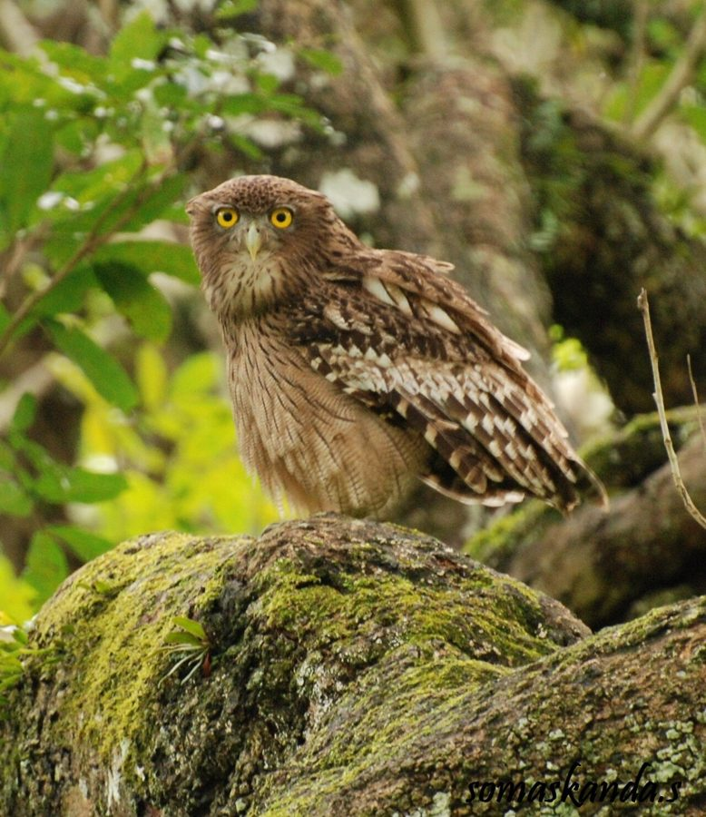

मछली उल्लूBrown Fish Owl
Ketupa zeylonensis · Strigidae · BRD-0052

- Scientific name
- Ketupa zeylonensis (J.F.Gmelin, 1788)
- Family
- Strigidae
- Hindi
- मछली उल्लू
- Status here
- native
- IUCN
- LC
When to look कब देखें
Present all year.
मछली उल्लू / Brown Fish Owl
Ketupa zeylonensis (J.F.Gmelin, 1788) — Strigidae
मछली उल्लू (ब्राउन फिश आउल) — पूर्वी उत्तर प्रदेश की नदियों, जलधाराओं और तालाबों के किनारे घने जंगलों तथा बागों में पाया जाने वाला एक बड़ा और आकर्षक उल्लू है। इसकी सबसे बड़ी पहचान इसके सिर पर बाहर की ओर झुकी हुई दो क्षैतिज कलगी (prominent horizontal ear tufts), इसके बिना पंखों वाले पीले नंगे पैर (bare unfeathered legs and toes), और गाढ़े भूरे रंग का धारीदार शरीर है। इसके नंगे पैर पानी में चलने (wading) और बिना भीगे गीले शिकार को पकड़ने के लिए एक विशेष प्राकृतिक अनुकूलन हैं। यह रात के समय पानी के किनारे बैठकर तैरती हुई मछलियों, मेंढकों और केकड़ों पर नज़र रखता है और अचानक झपट्टा मारकर उन्हें सतह से उठा लेता है (snatching from water surface), जबकि ओसप्र्रे (Osprey) की तरह यह पानी में पूरी तरह गोता नहीं लगाता। रात के सन्नाटे में जलीय वनों से आने वाली इसकी गहरी और गूंजने वाली आवाज़ "तू-हू" (booming "tu-whoo") बहुत दूर तक गूंजती है।
Quick Identification त्वरित पहचान
| Feature | Description |
|---|---|
| Size | Large owl (48–56 cm total length); wingspan is around 110–135 cm |
| Legs | Diagnostic unfeathered (completely bare) yellow legs and toes (tarsi and feet) |
| Head | Large round head with messy, horizontally projecting ear tufts and staring yellow eyes |
| Colouration | Rufous-brown upperparts with dark brown streaks; pale buff underparts with vertical streaks |
| Habitat | Strictly riverine or associated with wetlands; sits on branches hanging directly over water |
| Hunting Action | Snatches prey from the water surface or wades in shallows; does not plunge-dive |
Field tip: Look for them at dusk in large mango trees or banyan trees bordering rivers or lakes. Watch for a large owl with messy, horizontal ear tufts perched on branches directly overhanging the water. Its bare legs are a key field ID feature. The female is larger than the male and is shown in the field tip.
Morphology आकारिकी
Biometrics (typical measurements in the northern Indian plains showing reverse sexual size dimorphism):
| Measurement | Range |
|---|---|
| Total length (Male) | 480–520 mm |
| Total length (Female) | 520–560 mm |
| Wingspan (Male) | 1100–1250 mm |
| Wingspan (Female) | 1200–1350 mm |
| Wing (Male) | 370–405 mm |
| Wing (Female) | 390–425 mm |
| Tail (Male) | 180–200 mm |
| Tail (Female) | 190–210 mm |
| Tarsus (Male) | 70–76 mm |
| Tarsus (Female) | 72–78 mm |
| Bill (Male) | 45–50 mm |
| Bill (Female) | 47–52 mm |
| Weight (Male) | 1000–1300 g |
| Weight (Female) | 1200–1600 g |
Plumage: The upperparts are rich rufous-brown, heavily streaked with blackish-brown and marked with pale buff spots on the wing-coverts. The facial disc is poorly defined, tawny-buff, with a white brow patch. A prominent white collar is present on the throat. The underparts are pale buffy-white, closely marked with vertical dark brown streaks and fine, wavy horizontal bars. The ear tufts are ragged and point outward and back rather than vertically.
Bare parts: The bill is large, powerful, and pale yellow-grey or horn-coloured. The irises are large and golden-yellow. The legs, tarsi, and toes are completely bare, yellow or greyish-yellow, with rough spicules on the soles to grip wet, slippery fish. The claws are long, curved, and black.
Vocalisations
Brown Fish Owls produce deep, echoing sounds near water bodies at night.
- booming call: A deep, resonant, two-note or three-note boom, tu-whoo-tu or boom-boom, repeated at intervals of a few minutes, primarily during courtship.
- Alarm call: A loud, clicking squeal or chuckle, shsh-shsh-shsh, uttered when disturbed or chased by crows during the day.
Behaviour & Ecology व्यवहार और पारिस्थितिकी
- Hunting style: A nocturnal wading predator. It sits silently on a low branch overhanging a stream or pool. Once a fish or crab is spotted, it glides down to snatch it from the surface. It will also wade into shallow water on river banks to capture frogs and crabs.
- Flight pattern: Unlike land-hunting owls, its flight is not completely silent because its wing feathers lack the soft, comb-like fringes found in Barn Owls. This is because silence is less critical for hunting fish beneath the water surface, which do not hear airborne sounds.
- Wading adaptation: The bare tarsi prevent feathers from becoming waterlogged, which would increase drag and make flight difficult after a strike.
Life Cycle / Phenology जीवन चक्र
- Breeding season: December to April in northern India, matching the dry season when water levels are low and fish are concentrated in shallow pools.
- Nesting: They do not build nests. They lay eggs in natural tree cavities, in the large forks of old trees, or in abandoned nests of larger birds like eagles or vultures.
- Nest site: Always located near water, in large Mango, Banyan (Ficus benghalensis), or Arjun (Terminalia arjuna) trees.
- Clutch size: 1 to 2 round, white eggs.
- Incubation: 32–35 days, performed mainly by the female while the male hunts.
- Fledging: Nestlings fledge in about 45–50 days and remain near the parent birds' aquatic hunting territories for several months.
Host Plants or Prey आहार
Primary food items:
- Fish: A wide variety of freshwater fish, including carps, catfish (like Singhi Heteropneustes fossilis), and murrels.
- Crustaceans: Jacquemont's Field Crabs (Paratelphusa jacquemontii) and prawns.
- Amphibians & Reptiles: Grass frogs, pond frogs, water snakes (Xenochrophis piscator), and small turtles.
- Mammals & Birds: Occasional field rats and small birds.
Predators / Natural Enemies शत्रु
- Larger predators: Large eagles (like Pallas's Fish Eagle) may occasionally attack fish owls.
- Corvids: House Crows (Corvus splendens) and Jungle Crows mob perched fish owls during the day, revealing their locations.
- Human threats: Poisoning from polluted waters, destruction of nesting trees along canals, and illegal capturing for superstitious trade.
Agricultural / Human Relevance कृषि प्रासंगिकता
Wetland scavenger and predator. By preying on crabs that damage irrigation canals and consuming sick fish, Brown Fish Owls help maintain the health of local fisheries.
Conservation and legal status: Protected under Schedule IV of the Wildlife Protection Act, 1972. They are highly threatened by water pollution from agricultural run-off and the removal of mature trees bordering river channels and village ponds.
Expected Locally स्थानीय रूप से अपेक्षित
Not a field record. Written from published accounts for eastern Uttar Pradesh. No confirmed local sighting yet — if you have seen it, that is what the atlas needs.
अभी तक स्थानीय पुष्टि नहीं। यह विवरण प्रकाशित स्रोतों से है, किसी अवलोकन से नहीं।
Spotted regularly along the Ghaghra and Rapti rivers in the Basti district, as well as near the larger lakes and irrigation canals of Harraiya. They are known to roost in mature mango orchards near riverine floodplains. Their booming calls are a typical nocturnal sound along the river corridors of Basti.
Distribution वितरण
Global range: Widespread across the Middle East, the Indian Subcontinent, southern China, and Southeast Asia.
In India: Found throughout the plains and hills up to 1,500 metres, always near forested water courses.
In Uttar Pradesh: Common resident along all major rivers, canals, and wetland complexes state-wide.
In Basti district / eastern UP: Observed year-round in riverine woodlands and mature village orchards near water.
Research Questions शोध प्रश्न
Anyone can investigate these | कोई भी इन प्रश्नों की जाँच कर सकता है
- What percentage of the Brown Fish Owl's diet in Basti consists of crabs versus fish? / बस्ती में मछली उल्लू के आहार में केकड़ों और मछलियों का प्रतिशत कितना है? — Dissect regurgitated pellets collected from riverine roosting trees.
- What is the average distance of a Brown Fish Owl nest from the nearest river or stream? — Map nests and measure distances to water bodies.
- Do Brown Fish Owls prefer nesting in Arjun trees over Mango trees along canals? — Survey and record tree species selected for nesting.
- How do Fish Owls respond to the presence of Ospreys hunting in the same canal stretch? / एक ही नहर क्षेत्र में शिकार करने वाले ऑस्प्रे की उपस्थिति पर मछली उल्लू क्या प्रतिक्रिया देता है? — Document interspecific interactions at dusk.
- Does the hooting frequency of Brown Fish Owls decrease in winter months compared to spring? — Conduct monthly audio counts of booming calls.
Similar Species मिलती-जुलती प्रजातियाँ
| Species | Key Difference | हिंदी |
|---|---|---|
| Indian Eagle-Owl (Bubo bengalensis) | Heavily feathered legs and toes; vertical ear tufts; orange eyes; lives in rocky ravines, not near water | बड़ा उल्लू — पंखदार पैर, सीधी कलगी, नारंगी आँखें |
| Barn Owl (Tyto alba) | Much smaller; heart-shaped white face; dark eyes; silent flight; lives in buildings, not near water | सफ़ेद उल्लू — छोटा आकार, दिल जैसा चेहरा, काली आँखें |
| Buffy Fish Owl (Ketupa ketupu) | Lacks distinct barred underparts; brighter yellow upperparts; not found in the Indian plains (restricted to Southeast Asia) | बफ़ी मछली उल्लू — पीला रंग, केवल दक्षिण-पूर्व एशिया में |
Field rule: Large brown-and-white owl with staring yellow eyes, ragged horizontal ear tufts, and bare yellow legs perching on branches overhanging water is a Brown Fish Owl.
Taxonomy & Classification वर्गीकरण
Original description. Johann Friedrich Gmelin described the Brown Fish Owl as Strix zeylonensis in 1788 in his Systema Naturae (ed. 13, vol. 1, part 1, p. 287). The type locality was Ceylon (now Sri Lanka). The genus name Ketupa was introduced by Lesson in 1830, derived from the Javanese name Ketup for the Buffy Fish Owl. The specific name zeylonensis is Latin for Ceylon, referencing the type locality.
Subspecies. Four subspecies are recognized globally. The subspecies resident in UP is:
| Subspecies | Authority | Range | Notes |
|---|---|---|---|
| K. z. leschenaultii | (Temminck, 1820) | India, Pakistan, Nepal, Bangladesh, Myanmar | UP subspecies; larger and has darker brown markings than the Sri Lankan nominate form K. z. zeylonensis |
Family and order placement. Placed in the order Strigiformes, family Strigidae (true owls), subfamily Striginae.
Phylogenetic notes. Genetic data suggests that the fish owls (Ketupa) are closely nested within the eagle-owl genus Bubo, leading some taxonomists to place them under the genus Bubo.
IUCN status rationale. Listed as Least Concern (LC) due to its large range and stable population trend. However, river pollution and loss of old riverbank trees present localized conservation challenges in South Asia.
Photo Gallery फोटो गैलरी
References संदर्भ
- Gmelin, J. F. (1788). Systema Naturae. Volume 1, Part 1. Lipsiae, p. 287. [original description]
- Ali, S. & Ripley, S. D. (1999). Handbook of the Birds of India and Pakistan. Vol. 3. Oxford University Press, New Delhi.
- Grimmett, R., Inskipp, C. & Inskipp, T. (2011). Birds of the Indian Subcontinent. 2nd ed. Christopher Helm, London.
- König, C. & Weick, F. (2008). Owls of the World. 2nd ed. Christopher Helm, London.
- BirdLife International (2024). Ketupa zeylonensis. IUCN Red List of Threatened Species. Ver. 2024.
- GBIF Occurrence Data — Ketupa zeylonensis, Uttar Pradesh (2010–2025).
Source file: species/fauna/birds/brown_fish_owl.md